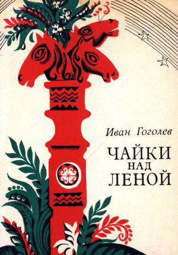

Гоголев - Кындыл И.М.
"Өлүөнэ хоптолоро"
Данилов С.П.
"Аймах дьонум"
Данилов С.П.
"Ырыаһыт доҕоттор"
Тимофеев М.Е.
"Өлүөнэ көмүөлэ: хоһооннор"

Гоголев - Кындыл И.М.
"Серебряное стремя"

Гоголев - Кындыл И.М.
"Чайки над Леной"
Попов Л.А.
"Утро над Леной"